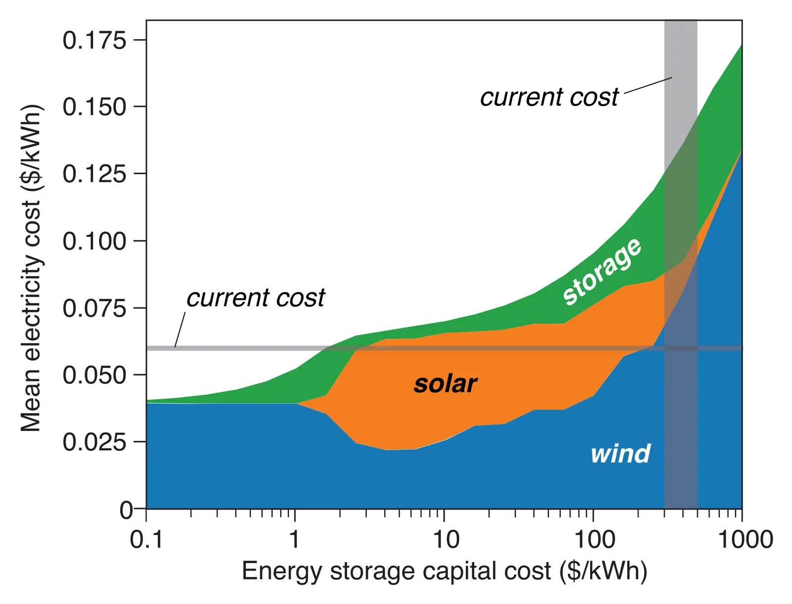

Effects of deep reductions in energy storage costs on highly reliable wind and solar electricity systems
Key finding. Even assuming perfect transmission across the contiguous United States, energy storage costs would need to fall several hundred-fold from current levels — to roughly $1/kWh — for fully variable-renewable systems to deliver highly reliable electricity without extensive curtailment.

What question did this paper ask?
If energy storage became very cheap, how much of the reliability problem in a wind-and-solar electricity system would simply go away?
This paper asked how far storage costs would have to fall to deliver high reliability without extensive curtailment of generation, and what happens to the economics of storage as more of it is added.
What did we find?
The analysis uses 36 years of hourly weather data, from 1980 to 2015, across the contiguous United States, in systems supplied only by wind and solar photovoltaics.
The required cost reduction is severe. Reaching high reliability without extensive curtailment demands storage at around $1/kWh, several hundred times cheaper than costs at the time of writing.
What storage is for changes as its cost falls. Expensive storage competes with curtailment to fill short-term gaps between generation and hourly demand; near-free storage instead serves as seasonal storage for the variable resource.
Storage faces what the paper calls double penalties in these systems. As capacity increases, the additional storage is used less frequently, and hourly electricity prices become less volatile — which reduces the price arbitrage opportunities that would reward the additional storage.
Why does it matter?
The double penalty explains why storage does not simply scale its way into solving the problem. Each increment is worth less than the one before, both physically and economically, so the market signal fades exactly as more capacity is added.
Stating the required cost reduction as a number makes the trade-off explicit. If storage alone would need to become several hundred times cheaper, then transmission, demand flexibility, and firm generation are not alternatives to be considered later but part of any realistic answer.
Citation, data, and code
Fan Tong, Mengyao Yuan, Nathan S. Lewis, Steven J. Davis, and Ken Caldeira (2020). Effects of deep reductions in energy storage costs on highly reliable wind and solar electricity systems. iScience 23, 101484.